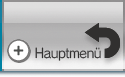
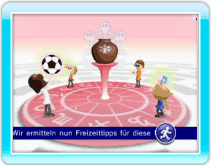
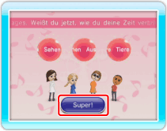

Diese Funktion gibt dir Tipps, welche Freizeitaktivitäten dir heute oder morgen besonderen Spaß machen und vielleicht sogar Glück bringen könnten. Vielleicht entdeckst du ja ein neues Hobby oder spannende neue Aktivitäten mit deinen Freunden!
Hinweis: Freizeittipps können für ein einzelnes Mii oder für bis zu sechs Mii-Charaktere gemeinsam ermittelt werden.
9 |
Freizeittipps |
 |



Wenn du die Tipps gelesen hast, wähle SUPER! und kehre so zum Hauptbild-schirm zurück. |
 und
und  gedrückt hältst. Entferne Mii-Charaktere, indem du sie aus der Schaltfläche
gedrückt hältst. Entferne Mii-Charaktere, indem du sie aus der Schaltfläche